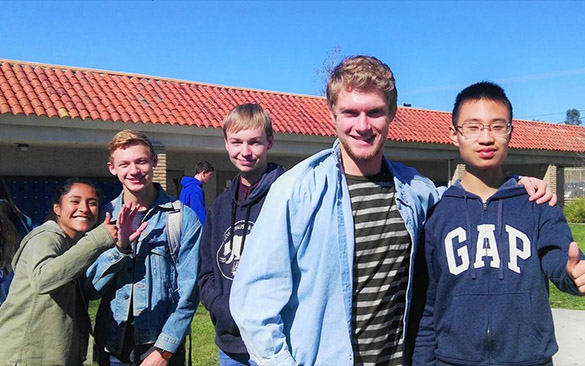
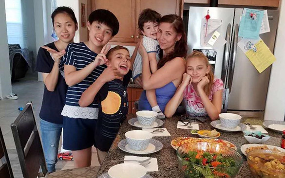

文化寻力美国行


我是谁？什么最中国？中国非物质文化遗产告诉你。中国非遗课堂项目面向热爱中国传统文化的青少年设立。参加的学员在中国非物质文化遗产代表性传承人的带领下，先在国内集中学习、体验中国茶艺、皮影、古法造纸、年画、剪纸等非物质文化遗产，然后作为文化使者，飞赴美国加州，在课堂上向美国学生讲述中国非遗的故事、展示中国非遗的魅力。在非遗文化的习得中，建立文化认知和文化自觉，在非遗文化的传播中，收获文化自信和人生成长。
时间：2018.07.10—2018.07.30
• 在北京亲身体验非遗项目，感受非遗魅力。

• 在加州作为文化使者，传递非遗文化。

• 入住美国家庭，体验美式课堂，感受美国文化。

• 结业后收获“文化交流小使者”证书，提升个人多元化背景。